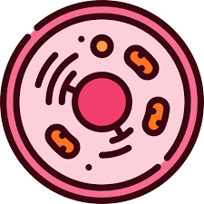

O professor decidiu dar uma aula ao ar livre pois a sala estava muito quente, ele entregou folha com atividade para cada um e descemos para o pátio do bloco C. Sentamos em bancos e em grupos e fizemos a atividade, depois o professor passou distribuindo livros e auxiliando com dúvidas e outras coisas. No fim da aula ele sentou com todo mundo no palco onde tem as bandeiras e explicou e respondeu as 3 primeiras questões da folha.
Resumo do Dia:

Atividade para Fixação de conteúdos sobre Células Procarióticas e Eucarióticas (animal e vegetal).
Pergunta 1.1 - Como é classificada a célula abaixo, quanto a organização celular (Procariótica/Eucariótica/Animal/Vegetal)? Justifique.
RespostaEucariótica, é uma organização complexa. Animal pois não possui parede celular, grandes vacúolos e cloroplasto.
Pergunta 1.2 - Identifique as estruturas indicadas pelas letras. Aponte a principal função de cada uma. Você pode colorir a célula para auxiliar na identificação das estruturas celulares!

A: Retículo endoplasmático granuloso (Produz proteína e armazena);
B: Ribossomo (Síntese proteica);
C: Peroxissomo (Desintoxicação celular);
D: Lisossomo (Digestão intracelular);
E: Cromatina (Forma os cromossomos);
F: Nucléolo (Informação dos ribossomos);
G: Carioteca (Protege o núcleo do citoplasma);
H: Centríolos (Participam da divisão celular e formação de cílios);
I: Complexo golgiense (Armazena e secreta substâncias);
J: Vacúolo (Armazena alimento);
K: Retículo endoplasmático não granuloso (Produz e armazena lipídios);
L: Poro interno ( nion de substâncias entre núcleo e citoplasma);
M: Núcleo (Controle das atividades celulares e armazenamento da informação genética);
N: Citoplasma (Preenche a célula);
O: Mitocôndria (Produz energia);
P: Membrana plasmática (Protege a célula);